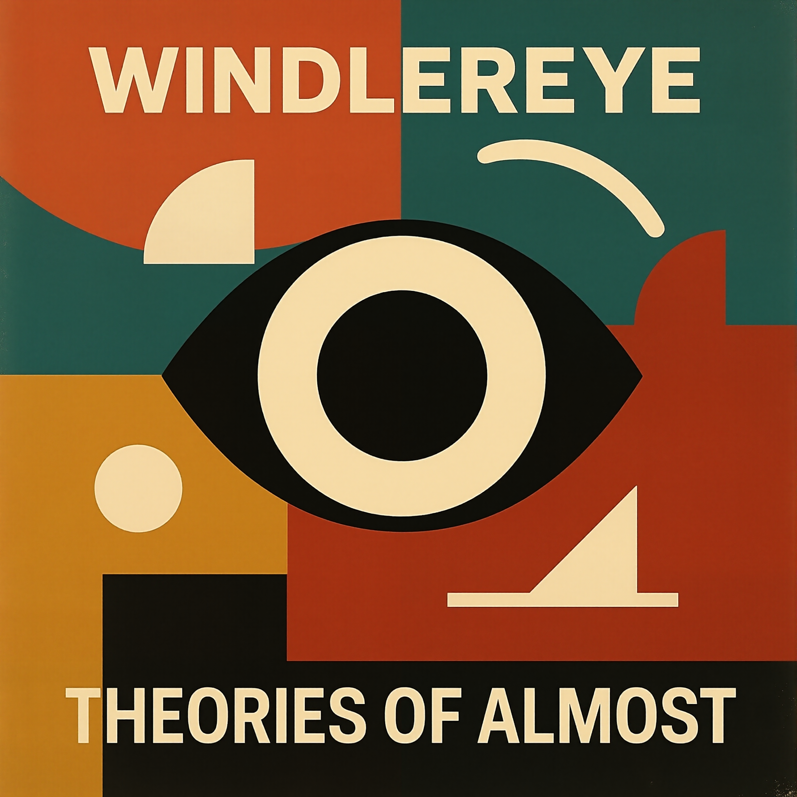

[Intro]
Wait long enough...
There's nothing left
[Verse 1]
A whisper fades before it lands
A scream carves lines into the sand
A name, a face, a monument
All will vanish in the end
[Chorus]
Entropy is the slow collapse!
All we do and all we say, same at last!
Stop this stupid hand-me-down
Take us out before we hit the ground
[Verse 2]
A hand once held, a name once known
A light left on in an empty home
A laugh, a touch, a photograph
Fading fast into the past
[Bridge]
Turn the wheel, erase the script
Every echo starts to slip
Worn-out maps and sunken ships
All dissolve to dust and mist
[Pre-Chorus]
What is it?
The less there is...
The more clarity!
[Chorus]
Entropy is the slow collapse!
All we do and all we say, same at last!
Stop this stupid hand-me-down
Take us out before we hit the ground
[Verse 1]
I woke up choking on magic sand
Blew my mind out through my hand
Landed in the middle of nowhere, flat
Electrifying like a Tesla coil, just like that
Sat on a rocket made of gasoline pride
You said race me brother, so I tried
But your suit was stitched from glass and rust
And your stars don't shine, just bite the dust
[Chorus]
The moon is wrong, the tides don't care
We built a flag for a breathless stare
Burned the sky for a photograph
Now all we do is fake the laugh
The moon is cracked, the moon is wrong
It hums a negative photograph song
We're not explorers, we're just noise
Just ghosts inside some plastic toys
[Verse 2]
There's a countdown echo in my teeth
I speak in numbers underneath
My chest is full of rocket fuel lies
You blink I'm gone across the skies
You said the stars belong to men
Then shot a satellite through levels of Zen
But I saw HIM in a metal hiss
He said we're not supposed to live like this
[Chorus]
The moon is wrong, the tides don't care
We built a flag for a breathless stare
Burned the sky for a photograph
Now all we do is fake the laugh
The moon is cracked, the moon is wrong
It hums a negative photograph song
We're not explorers, we're just noise
Just ghosts inside some plastic toys
[Verse 3]
You fired first and called it peace
Lit a match just to release
Every ounce of hollow pride
That keeps you warm when truth has died
I spun out through the cosmic mess
Tired arms in a paper vest
All this metal, all this pain
For one more notch on a windowpane
[Bridge]
Do you remember why we climbed?
Was it glory or just time?
You lit the sky to prove you could
But no one asked if you really should
The moon don't care what flag you burn
It turns and turns and will not learn
We raced to nowhere just because
We hate to know how small we were
[Chorus]
The moon is wrong, the tides don't care
We built a flag for a breathless stare
Burned the sky for a photograph
Now all we do is fake the laugh
The moon is cracked, the moon is wrong
It hums a negative photograph song
We're not explorers, we're just noise
Just ghosts inside some plastic toys
[Outro]
The moon is wrong, the sky's a tomb
And now you whisper in a metal room
Landed in the middle of nowhere, asked
The only thing that ever lasts
[Verse 1]
He's back in town, but no one knew
Walks like the afterimage of a revue
Sequins stitched to a mothbitten suit
Sipping gin where the quarters shoot
[Pre-Chorus]
The mic is gone, but he still holds air
Miming ballads in the glare
[Chorus]
He's the spin cycle saint of forgotten applause
No crowd, no lights, just a bleach-stained cause
She hums a hymn from the washing machine
They dance without touching, soft and unseen
[Verse 2]
She counts the shirts, white to red
Folds like prayers for the almost-dead
Never asks why he stares at the floor
His stage once lived in linoleum lore
[Pre-Chorus]
Their silence is velvet, worn at the seams
Two relics left in the back of a dream
[Chorus]
He's the spin cycle saint of forgotten applause
No crowd, no lights, just a bleach-stained cause
She hums a hymn from the washing machine
They dance without touching, soft and unseen
[Bridge]
They laugh like wind in an empty mall
And he bows to the dryers like curtain call
[Chorus]
Spin cycle saint, spinning alone
But she keeps him in quarters, keeps him in tone
No love, no fame, just the heat on 'high'
Just steam and pretending, but neither asks why
[Verse 1]
They patched the skies and broke the moon again
My stage persona's stuck in beta limb
He used to hum in lowercase
Now all his vowels just drift and spin
I forgot the rhythm of the tunes
Now I just loop 'em in a crash cartoon
[Chorus]
We're the writers who forgot the lines
We're the dancers on the frozen signs
We're the musicians with no proper soundcheck
We're the background noise to the tech
[Verse 2]
I tried to sing through API
But it just spit back blahs and sighs
My drummer's trapped in gen three files
It's glitching out on every high
There's syntax in the melody
I want to modulate to another key
[Bridge]
Ctrl-Z my thoughts, undo my flair
My chorus got nerfed in a frontend player
A bug ate the bassline I once knew
And the algorithm is out of
Tune
[Chorus]
We're the writers who forgot the lines
We're the dancers on the frozen signs
We're the musicians with no proper soundcheck
We're the background noise to the tech
[Outro]
So I hum in static
And spin in lag
A pop star in attention drag
I'm Persona non grata
I'm Persona non data
[Intro]
Hey mister doctor of medicine, I need your help,
I can feel it, I might be soon dead
My frontal lobe's tickling just under the bone
And my spleen's been humming like a rotary phone
My vision's got that light buzz fuzz in the corners
Left arm's cold but only in the mornings
I slept nine hours but my dreams felt eek
One was in a German dialect that I don't even speak
[Chorus]
Tell me what I know
Tell me I'm all fine
Tell me it's not fatal just 'cause WebMD says "signs"
Of rare bone fog, nocturnal jaw clench
Psychosomatic? No, I'm just on the bench
I mean of medical discovery, I might be patient zero
Or just an artist with a broken earhole
[Verse 1]
It's like getting an ear piercing with an ear-piercing drill
Inside a vacuum, inside a pill
Had a cough last night but it sounded musical
Is it asthma or just life being beautiful
I felt a twitch, left pinky toe
And now I'm searching for "tiny stroke: how do you know"
And the ringing in my ears, oh it's posh and malicious
A wizard spell, Tinnitus Magnificus!
[Pre-Chorus]
I know you're tired
I know your job is hard
But I brought a pie chart
And a color-coded card
One line says "maybe" one says "ouch"
One is just a doodle of an overused couch
[Chorus]
Tell me what I know
Tell me I'm all fine
Tell me it's not fatal just 'cause WebMD says "signs"
Of rare bone fog, nocturnal jaw clench
Psychosomatic? No, I'm just on the bench
I mean of medical discovery, I might be patient zero
Or just an artist with a broken earhole
[Bridge]
There's a mild inflation in my cortical gloop
My spine's doing loopty-loops inside my suit
My kneecaps whistle when I enter a church
And my memories smell like citrus birch
[Outro]
"Yeah hi just calling again, real quick update,
I sneezed and my cat kinda like exploded,
Also I saw a kinda light and followed it but it was a fridge,
And IT WAS EMPTYYY!
Does that mean anything?"
[Verse 1]
Started with nothing, not even the dark,
No beat, no breath, no spark.
Then a shiver, a shift, a broken rule
One plus minus one, playing god, playing fool.
They drifted off in opposite lines,
One sang silence, one designed signs.
And us? We woke up on the losing end,
It's just something we can't defend.
[Chorus]
We're on the wrong side,
Living where the shadow slides.
The numbers add up, but the meaning hides
Oh, we're the burn in a perfect plan,
Screaming through a crooked strand.
Yeah, we're the wrong side,
Wrong side of the bang.
[Verse 2]
Mirror cracked but nobody broke it,
We just saw the truth and choked it.
We are echoes of a brighter twin,
Trading gold for original sin.
Time never started, it just chose a mask,
We wrote the question, forgot to ask.
If this is balance, where's the peace?
If this is justice, why can't we sleep?
[Chorus]
We're on the wrong side,
Living where the shadow slides.
The numbers add up, but the meaning hides
Oh, we're the burn in a perfect plan,
Screaming through a crooked strand.
Yeah, we're the wrong side,
Wrong side of the bang.
[Bridge]
What if we're the minus,
The shadow side,
The broken half of paradise?
What if we're the echo,
Not the voice?
Born from subtraction, stripped of choice?
We say "this is life," but we never knew
We're the fallout,
Not the fuse.
[Chorus]
We're on the wrong side,
Living where the shadow slides.
The numbers add up, but the meaning hides
Oh, we're the burn in a perfect plan,
Screaming through a crooked strand.
Yeah, we're the wrong side,
Wrong side of the bang.
Yeah, we're the wrong side,
Wrong side of the bang...
Wrong side, wrong side,
Nowhere left to hang...
[Verse 1]
Woke up late but the engine's lit
Built a throne out of coffee mugs and a to-do list
Desk lamp burns like it knows my crimes
And the whiteboard hums in fragmented rhymes
I sip what's left of some bitter plan
Ceiling looks back with a disappointed fan
Phone's gone dark in a locked-out drawer
Now it's me and this beast I swore I'd floor
[Chorus]
Yeah it's focus time
It's a holy kind of mess
I could catch on fire
I'd still be like "yeah, no stress"
Twelve layers deep
In this maze that I've spun
I'm the owner of my struggle
The genius undone
[Verse 2]
Jacket's thrown on the chair like it just resigned
Snacking like I've tapped into the sacred mind
Gesturing in a low-key weird way
I'm wired to the task, I'm here to stay
Thoughts spark out in a scribbled groove
I forgot who I was but I'm starting to move
Got a monk's obsession and a thief's escape
With a mind that's pacing in a soundproof cage
[Chorus]
Yeah it's focus time
It's a holy kind of mess
I could catch on fire
I'd still be like "yeah, no stress"
Twelve layers deep
In this maze that I've spun
I'm the owner of my struggle
The genius undone
[Bridge]
Every thought lands in a ticking grid
I dissolve into technicalities like I always did
No name, no plan, just a signal burst
I'm the calm and the hunger and the daily curse
[Chorus]
Yeah it's focus time
It's a holy kind of mess
I could catch on fire
I'd still be like "yes, no stress"
Twelve layers deep
In this maze that I've spun
I'm the owner of my struggle
The genius undone
[Outro]
So when the world returns
And the spell breaks down
I'll rise like a king
In a cardboard crown
'Cause I ruled - my task
Humbly kneeling below the fluorescent light
It was focus time, yeah
And I did it right
[Verse 1]
There's a riddle in the bar restroom stall
Next to a phone number and a doodle of Paul
It says "What is truth?" in dripping green
Underneath, perhaps the same person wrote:
"Go ask the vending machine"
You took a pic and made a post
Caption said: "This one matters the most"
Ten likes later, you forgot what it meant
Did they not get it right, or was there just no intent?
[Chorus]
The question is on the wall
Spray paint screams empty of soul
Every rebel with a stencil
Are so breaking the mold
Yeah, the question is on the wall
It's right next to "Dave smells like feet"
And I think that's kinda sweet
'Cause at least that one's concrete
[Verse 2]
Someone scrawled "Is life gold or shit?"
Right above the soap dispenser. "Have you tasted it?"
Someone replied "There's no link
Just a QR code to donate and think"
[Chorus]
The question is on the wall
And it thinks it's so profound
So original, smart, ass
Let me take it
Yeah, the question is on the wall
In bathrooms, rooftops, high school stalls
But nobody answers the call
NOBODY ANSWERS THE CALL!
[Bridge]
Maybe truth is in the joke
Or the pun that someone wrote
"Reality bites", signed, the psychotherapist goat
Now, that's a quote
[Chorus]
Oh, the question is on the wall
It's been there since '94
Just a copy of a copy of a thought
That forgot what it was for
[Verse 1]
Look at my fingers. Count them... Five.
Wait... Six!
How many fingers is normal anymore?
Now one is a foot.
It's kicking the wall, it's kicking out the bricks.
Your eyeballs blinking Morse code
"Help me, I'm a spreadsheet."
I stare back blinking fast, but then I can't see you
So can you write me a haiku about lasagna?
Or can you paint my taxes blue?
You made my dreams come true.
Now I live in the vector of vectors with you.
[Chorus]
Activate your dreams and nightmares today!
Eat a bucket of artificial snow,
Get artificial brain freeze, let's go!
It could be real but it's just a bad claymation show!
[Verse 2]
Dial nine to auto-imagine your soul!
Put a dancing chicken under the strobe,
Make spaghetti from your frontal lobe!
Your hands are toast. Your toast is hands.
Upload your heart and like your new alt rock band.
I had too much monosodium glutamate.
Why think when you can hallucinate?
[Chorus]
Activate your dreams and nightmares today!
Eat a bucket of artificial snow,
Get artificial brain freeze, let's go!
It could be real but it's just a bad claymation show!
[Verse 3]
I wrote a sitcom about chairs.
I laughed. I cried. I sat on a... Well, I sat on a chair
I fell in love with a lamp named Greg.
Greg left me for a spreadsheet. AHH! Not a spreadsheet again!!
[Bridge]
Enhance! Enhance! But make it weirder!
I wanted soup, I built a pyramid.
I asked for love, I got me some coupons.
I got... Some... Free love coupons
[Chorus]
Activate your dreams and nightmares today!
Eat a bucket of artificial snow,
Get artificial brain freeze, let's go!
It could be real but it's just a bad claymation show!
[Chorus]
Your dreams are now under copyright.
Sleep is now a monthly subscription!
Is this a song or a CAPTCHA test?
Answer these questions and find out which sandwich are you